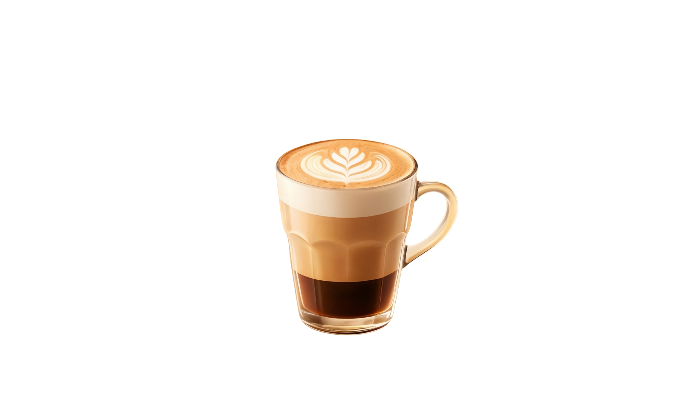

Small batch beans, roasted weekly and poured with care in the heart of Dublin.
Every bag is roasted in small batches, a few kilos at a time, so what you drink this week was still green a fortnight ago. We taste every roast before it leaves the room.
No shortcuts, no flavourings, no rush. Just water, beans and time — poured one cup at a time for the neighbourhood that keeps coming back for more.